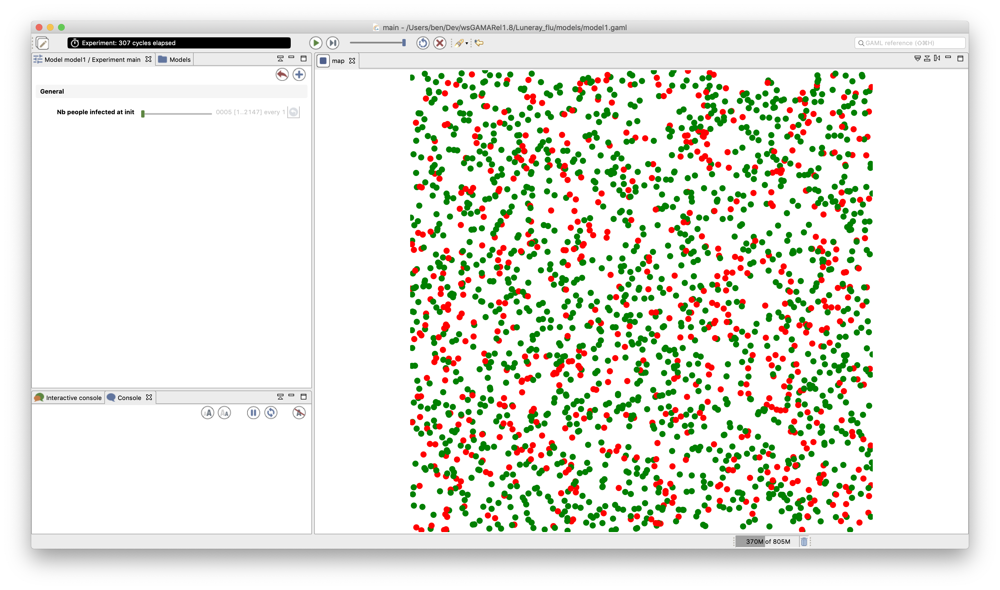

1. Creation of a first basic disease spreading model
This first step illustrates how to create simple agents and make them move in their environment.

Formulation
- Set the time duration of a time step to 5 minutes
- Define the people species with a moving skill
- Define the move reflex that allows the people agent to move randomly and the infect reflex that allows them to infect other people agents.
- Define the aspect of the people species
- Add the people species to a display
Model Definition
Project and model
The first step of this tutorial consists of launching GAMA and choosing a workspace, then to define a new project or to import the existing one. For people that do not want to re-write all the models but just to follow the model construction, they can just download the model project here and the follow this procedure to import it into GAMA. For the other, the project and model creation procedures are detailed here.
Note that the concepts of workspace and projects are explained here.
model structure
A GAMA model is composed of three types of sections:
- **global **: this section, that is unique, defines the "world" agent, a special agent of a GAMA model. It represents all that is global to the model: dynamics, variables, actions. In addition, it allows to initialize the simulation (init block).
- species and grid: these sections define the species of agents composing the model. Grid is defined in the following model step "vegetation dynamic";
- **experiment **: these sections define a context of the execution of the simulations. In particular, it defines the input (parameters) and output (displays, files...) of a model.
More details about the different sections of a GAMA model can be found here.
species
A species represents a «prototype» of agents: it defines their common properties.
Three different elements can be defined in a species:
- the internal state of its agents (attributes)
- their behavior
- how they are displayed (aspects)
In our model, we define a people species:
species people {
}
In addition, we want to add a new capability to our agent: the possibility to move randomly. For that, we add a specific skill to our people agents. A skill is a built-in module that provides the modeler a self-contain and relevant set of actions and variables. The moving provides the agents with several attributes and actions related to movement.
species people skills: [moving]{
...
}
Internal state
An attribute is defined as follows: type of the attribute and name. Numerous types of attributes are available: int (integer), float (floating-point number), string, bool (boolean, true or false), point (coordinates), list, pair, map, file, matrix, agents species, rgb (color), graph, path...
- Optional facets: <- (initial value), update (value recomputed at each step of the simulation), function:{..} (value computed each time the variable is used), min, max
In addition to the attributes the modeler explicitly defines, species "inherits" other attributes called "built-in" variables:
- A name (name): the identifier of the species
- A shape (shape): the default shape of the agents to be constructed after the species. It can be a point, a polygon, etc.
- A location (location): the centroid of its shape.
In our model, we define 2 new attributes to our people agents:
- speed of type float, with for initial value: a random value between 2 and 5 km/h
- is_infected of type bool, with for initial value: false
species people skills:[moving]{
float speed <- (2 + rnd(3)) #km/#h;
bool is_infected <- false;
}
Note we use the rnd operator to define a random value between 2 and 5 for the speed. In addition, we precise a unit for the speed value by using the # symbol. For more details about units, see here.
Behavior
GAMA proposes several ways to define the behavior of a species: dynamic variables (update facet), reflexes...
A reflex is a block of statements (that can be defined in global or any species) that will be automatically executed at each simulation step if its condition is true, it is defined as follows:
reflex reflex_name when: condition {...}
The when facet is optional: when it is omitted, the reflex is activated at each time step. Note that if several reflexes are defined for a species, the reflexes will be activated following their definition order.
We define a first reflex called move that is activated at each simulation step (no condition) and that makes the people move randomly using the wander action from the moving skill.
species people skills:[moving]{
//variable definition
reflex move{
do wander;
}
}
We define a second reflex called infect that is activated only when the agent is infected (is_infected = true) and that ask all the people at a distance of 10m to test a probability to be infected.
species people skills:[moving]{
//variable definition and move reflex
reflex infect when: is_infected{
ask people at_distance 10 #m {
if flip(0.05) {
is_infected <- true;
}
}
}
}
The ask allows an agent to ask other agents to do something (i.e. to execute a sequence of statements). The at_distance operator allows to get the list of agents (here of people agents) that are located at a distance lower or equal to the given distance (here 10m). The flip operator allows to test a probability.
Display
An agent aspects have to be defined. An aspect is a way to display the agents of a species: aspect aspect_name {...}
In the block of an aspect, it is possible to draw:
- A geometry: for instance, the shape of the agent (but it may be a different one, for instance, a disk instead of a complex polygon)
- An image: to draw icons
- A text: to draw a text
In our model, we define an aspect for the people agent called circle that draw the agents as a circle of 10m radius with a color that depends on their is_infected attribute. If the people agent is infected, it will be drawn in red, in green otherwise.
species people {
...//variable and reflex definition
aspect circle {
draw circle(10) color:is_infected ? #red : #green;
}
}
The ? structure allows to return a different value (here red or green) according to a condition (here is_infected = true).
global section
The global section represents a specific agent, called world. Defining this agent follows the same principle as any agent and is, thus, defined after a species. The world agent represents everything that is global to the model: dynamics, variables... It allows to initialize simulations (init block): the world is always created and initialized first when a simulation is launched (before any other agents). The geometry (shape) of the world agent is by default a square with 100m for side size but can be redefined if necessary. The step attribute of the world agent allows to specify the duration of one simulation step (by default, 1 step = 1 seconde).
global variable
In the current model, we define 4 global attributes:
- nb_people: the number of people that we want to create (init value: 2147)
- nb_infected_init: the number of people infected at the initialization of the simulation (init value: 5)
- step: redefine in order to set the duration of a simulation step to 5 minutes.
- shape: redefine in order to set the geometry of the world to a square of 1500 meters side size.
global {
int nb_people <- 2147;
int nb_infected_init <- 5;
float step <- 5 #mn;
geometry shape<-square(1500 #m);
}
Model initialization
The init section of the global block allows to initialize the define what will happen at the initialization of a simulation, for instance, to create agents. We use the statement create to create agents of a specific species: create species_name + :
- number: number of agents to create (int, 1 by default)
- from: GIS file to use to create the agents (optional, string or file)
- returns: list of created agents (list)
For our model, we define the init block in order to create nb_people people agents and ask nb_infected_init of them to be infected:
global {
// world variable definition
init{
create people number:nb_people;
ask nb_infected_init among people {
is_infected <- true;
}
}
}
experiment
An experiment block defines how a model can be simulated (executed). Several experiments can be defined for a given model. They are defined using : experiment exp_name type: gui/batch {[input] [output]}
- gui: experiment with a graphical interface, which displays its input parameters and outputs.
- batch: Allows to setup a series of simulations (w/o graphical interface).
In our model, we define a gui experiment called main_experiment :
experiment main_experiment type: gui {
}
input
Experiments can define (input) parameters. A parameter definition allows to make the value of a global variable definable by the user through the graphic interface.
A parameter is defined as follows:
parameter title var: global_var category: cat;
- title : string to display
- var : reference to a global variable (defined in the global section)
- category : string used to «store» the operators on the UI - optional
- <- : init value - optional
- min : min value - optional
- max : min value - optional
Note that the init, min and max values can be defined in the global variable definition.
In our model, we define one parameter:
- "Nb people infected at init" that will define the value of the global variable nb_infected_init with a min value of 1 and a max value of 2147 (the number of people living in Luneray).
experiment main_experiment type:gui{
parameter "Nb people infected at init" var: nb_infected_init min: 1 max: 2147;
output { }
}
output
Output blocks are defined in an experiment and define how to visualize a simulation (with one or more display blocks that define separate windows). Each display can be refreshed independently by defining the facet refresh_every: nb (int) (the display will be refreshed every nb steps of the simulation).
Each display can include different layers (like in a GIS):
- Agents lists : agents layer_name value: agents_list aspect: my_aspect;
- Agents species : species my_species aspect: my_aspect
- Images: image layer_name file: image_file;
- Charts : see later.
Note that it is possible to define a opengl display (for 3D display or just to optimize the display) by using the facet type: opengl.
output {
display map {
species people aspect: circle;
}
}
Complete Model
model model1
global {
int nb_people <- 2147;
int nb_infected_init <- 5;
float step <- 5 #mn;
geometry shape<-square(1500 #m);
init{
create people number:nb_people;
ask nb_infected_init among people {
is_infected <- true;
}
}
}
species people skills:[moving]{
float speed <- (2 + rnd(3)) #km/#h;
bool is_infected <- false;
reflex move{
do wander;
}
reflex infect when: is_infected{
ask people at_distance 10 #m {
if flip(0.05) {
is_infected <- true;
}
}
}
aspect circle {
draw circle(10) color:is_infected ? #red : #green;
}
}
experiment main type: gui {
parameter "Nb people infected at init" var: nb_infected_init min: 1 max: 2147;
output {
display map {
species people aspect:circle;
}
}
}